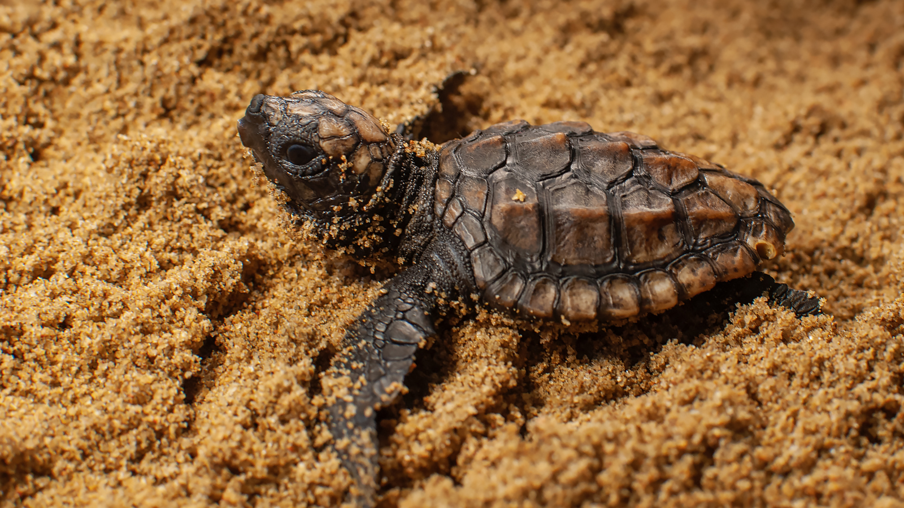
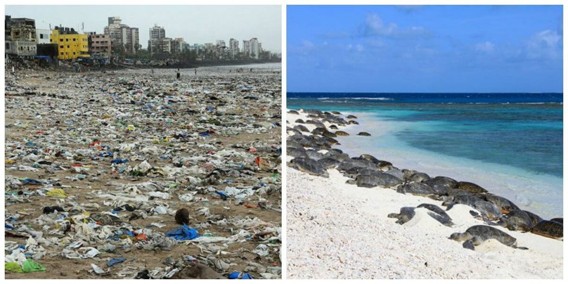
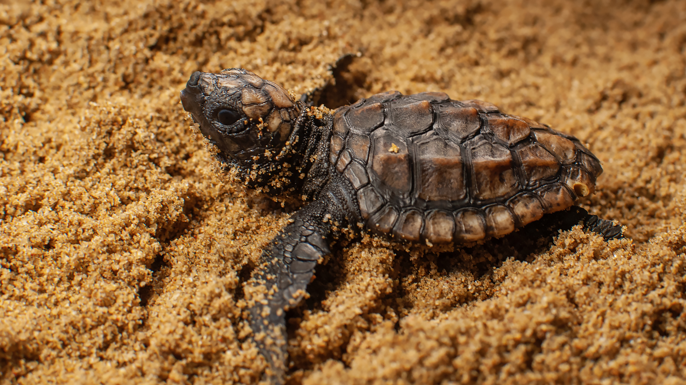
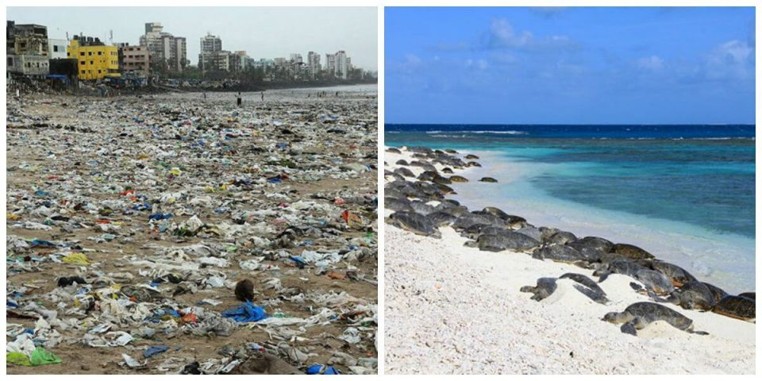

Endangered Turtle Species In Sri Lanka
- Leatherback sea turtle
- Hawksbill sea turtle
- Green sea turtle
- Olive ridley sea turtle
- Loggerhead sea turtle


It inhabits marine ecosystems and lays its eggs on lands in dramatic nesting events.
The largest of all sea turtles and the fourth heaviest reptilian species in the world.
The leatherback sea turtle can weigh up to 1,540 lb (700kg).
They are named for their narrow, pointed beak, which resembles a hawk's bill. They are found
in tropical and subtropical waters around the world, including in the Indian and Pacific Oceans.They feed primarily
on sponges, but also eat other invertebrates and algae. Hawksbill sea turtles are known for their beautiful shells,
which are highly valued for their use in jewelry and other decorative items.
Hawksbill sea turtles can weigh up to 100-200 pounds (45-90 kilograms).
They are unique among sea turtles in that they are herbivorces, eating mostly seagrasses and algae.
This diet is what gives their fat a greenish color (not their shells), which is where their name comes from.
Green sea turtles weigh up to 300-350 pounds.
They are currently the most abundant of all sea tutles.
Their vulnerable status comes from the fact that they nest in a very small number of places,
and therefore any disturbance to even one nest beach could have huge repercussions on the entire population.
Olive ridley sea turtle weigh up to 75-110 pounds.
allowing them to crush hard-shelled prey like clams and sea urchins.
They are less likely to be hunted for their meat or shell compared to other sea turtles.
Bycatch, the accidental capture of marine animals in fishing gear,
is a serious problem for loggerhead turtles because they frequently come in contact with fisheries.
Loggerhead sea turtles weigh up to 175-400 pounds.
Ways To Protect The Turtle Population
 



- Reduce marine debris that may entangle or be accidentally eaten by sea turtles.
- Participate in coastal clean-ups and reduce plastic use to keep our beaches and ocean clean. Trash in the ocean can harm sea turtles and other creatures that live there.
- Carry reusable water bottles and shopping bags
- Refrain from releasing balloons, they'll likely end up in the ocean
where sea turtles can mistake them for prey and consume them. - Keep nesting beaches dark and safe for sea turtles. Turn off, shield, or redirect lights visible from the beach. Lights disorient hatchling sea turtles and discourage nesting females from coming onto the beach to lay their eggs.
- Do not disturb nesting turtles, nests, or hatchlings.
Attend organized sea turtle watches that know how to safely observe nesting sea turtles. - Remove recreational beach equipment like chairs, umbrellas, boats at night so sea turtles are not turned away.
- Fill in holes and knock down sandcastles before you leave the beach. They can become obstacles for nesting turtles or emerging hatchlings.
- Use "Reef Friendly" Sunscreen because certain sunscreens carry chemicals that can damage coral reefs.
- Become a conscious and responsible seafood consumer by asking where and how
your seafood was caught. Choose seafood caught in ways that do not harm or kill turtles. Consult sustainable seafood information networks to learn about how and where your seafood is caught.
Why Are The Turtles Important?

Coral Reefs
Coral reefs are home to Hawksbills, which specialise in eating a handful of species of sea sponges. This diet allows less common types of sponges to grow, which increases the variety of life on the reef. Without Hawksbills, sponges can overgrow and suffocate slow-growing corals causing them to die. As reefs become more and more threatened by climate change and other detrimental challenges, the role of the Hawksbill on the reef has become even more crucial.
Beaches
Sea turtles also have a positive influence on water. Nesting sea turtles help beaches by depositing their eggs in the sand. Eggshells and unhatched eggs left behind provide important nutrients that nourish dune vegetation such as beach grasses, which stabilise dunes and help to prevent coastal erosion.

Turtle Predators
Sea turtles are prey for other animals at all stages of life. Hatchlings are prey for birds, crabs, land mammals, and fish. Adult sea turtles are prey for apex predators like sharks and orcas.

Turtle Prey
Different species of sea turtles feed on different things, though most of them like jellyfish. Leatherback sea turtles specialise in eating jellyfish which keeps the jellyfish population in check. If Leatherbacks were to disappear, jellyfish populations would explode - Turtle02causing an imbalance in marine biodiversity. Jellyfish prey upon larval fish, so without these larval fish - there would be no fish in the sea! Again, stating how important the preservation of marine life is so vital to maintaining that fine balance.

Helping Others
Sea turtles provide habitat for an array of “aquatic hitchhikers” like barnacles and other small crustaceans, remoras, algae, and diatoms. Because sea turtles undergo long migrations, they help to transport these species. They also act as sort of an umbrella for fish that use them as shelter from predators. When at the sea surface to breathe or rest, sea turtles also sometimes provide a resting spot for seabirds to land on - sort of like a reptilian aircraft carrier!

Importance To Humans
Sea turtles play an important cultural role for many coastal communities around the world. Many indigenous cultures revere them or consider them ancestors. They are also an important source of income for coastal residents through turtle-watching ecotourism which is a major and an increasingly popular part of Sri Lanka tourism. Research has shown that sea turtle ecotourism can generate three times the income, than by selling sea turtle parts (eggs, meat and shells), making them worth more alive than dead.